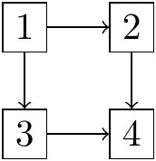

A La théorie des graphes
La théorie des graphes est une théorie informatique et mathématique. Les algorithmes élaborés pour résoudre des problèmes concernant les objets de cette théorie ont de nombreuses applications dans tous les domaines liés à la notion de réseau (réseau social, réseau informatique, télécommunications, etc.) et dans bien d’autres domaines (par exemple génétique).
Nous introduisons ici la notion de graphe et quelques matrices associées, que nous utiliserons dans ce volume pour appliquer les notions d’algèbre linéaire.
Définition A.1 (Un graphe) Un graphe est un ensemble de points, dont certaines paires sont directement reliées par un (ou plusieurs) lien(s). Ces liens peuvent être orientés, c’est-à-dire qu’un lien entre deux points \(A\) et \(B\) relie soit \(A\) vers \(B\), soit \(B\) vers \(A\). Dans ce cas, le graphe est dit orienté. Nous représentons un graphe orienté à l’aide de flèches. Sinon, les liens sont symétriques, et le graphe est non-orienté. Nous représentons un graphe non-orienté à l’aide de traits.
Voici un exemple de graphe non-orienté:Figure A.1: Un exemple de graphe non-orienté
Le lien qui relie le point \(1\) au point \(2\) va dans les deux directions, c’est-à-dire que le point \(1\) est relié au point \(2\) et le point \(2\) est relié au point \(1\).
Voici maintenant un exemple de graphe orienté:
 Le lien qui relie le point \(1\) au point \(2\) va dans une seule direction, c’est-à-dire que le point \(1\) est relié au point \(2\) mais le point \(2\) n’est pas relié au point \(1\) mais bien au point \(4\).
Les points d’un graphe peuvent être appelés des sommets ou des noeuds et les liens peuvent être appelés des arêtes (graphe non-orienté) ou des arcs (graphe orienté).
Définition A.2 (La matrice des degrés) La matrice des degrés, notée \(D\) d’un graphe, est une matrice carrée diagonale de dimension \(n \times n\), où \(n\) est le nombre de sommets du graphe. Cette matrice est définie par: \[\begin{align*} d_{i,j}=\left\{ \begin{matrix} \deg(v_i) & \mbox{si}\ i = j \\ 0 & \mbox{si}\ i \neq j \end{matrix} \right. \end{align*}\]
Le degré du sommet, noté \(\deg(v_i)\), est le nombre de liens (arêtes ou arcs) aboutissant à ce sommet. Cela entraîne que chaque boucle compte pour 2 : en effet, chaque lien a deux extrémités et chacune de ces deux extrémités augmente le degré. De la même façon, les sommets isolés ont un degré égal à 0.La matrice des degrés du graphe de la figure A.1 est donnée par: \[\begin{align*} \begin{bmatrix} 2 & 0 & 0 & 0 & 0 & 0 \\ 0 & 3 & 0 & 0 & 0 & 0 \\ 0 & 0 & 3 & 0 & 0 & 0 \\ 0 & 0 & 0 & 1 & 0 & 0 \\ 0 & 0 & 0 & 0 & 3 & 0 \\ 0 & 0 & 0 & 0 & 0 & 2 \end{bmatrix} \end{align*}\]
La matrice d’adjacence du graphe de la figure A.1 est donnée par: \[\begin{align*} \begin{bmatrix} 0&1&0&0&1&0\\ 1&0&1&0&1&0\\ 0&1&0&1&0&1\\ 0&0&1&0&0&0\\ 1&1&0&0&0&1\\ 0&0&1&0&1&0\\ \end{bmatrix} \end{align*}\]
La matrice laplacienne du graphe de la figure A.1 est donnée par: \[\begin{align*} L &= D - A \\ &= \begin{bmatrix} 2&0&0&0&0&0\\ 0&3&0&0&0&0\\ 0&0&3&0&0&0\\ 0&0&0&1&0&0\\ 0&0&0&0&3&0\\ 0&0&0&0&0&2\\ \end{bmatrix} - \begin{bmatrix} 0&1&0&0&1&0\\ 1&0&1&0&1&0\\ 0&1&0&1&0&1\\ 0&0&1&0&0&0\\ 1&1&0&0&0&1\\ 0&0&1&0&1&0\\ \end{bmatrix} \\ &= \begin{bmatrix} 2&-1&0&0&-1&0\\ -1&3&-1&0&-1&0\\ 0&-1&3&-1&0&-1\\ 0&0&-1&1&0&0\\ -1&-1&0&0&3&-1\\ 0&0&-1&0&-1&2\\ \end{bmatrix} \end{align*}\]